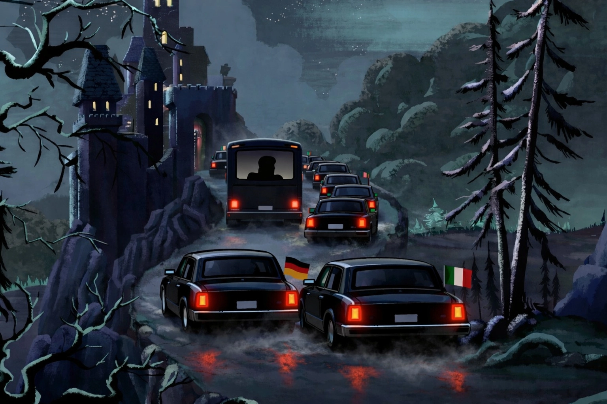

Der Europäische Rat sollte Nationalrat heißen

Blog post, 11/02/2025, von Sven Franck (en français, in english) -
TL;DR – Morgen ziehen sich nationale Staats- und Regierungschefs auf ein Schloss in Belgien zurück, um über die europäische Wettbewerbsfähigkeit zu beraten. Echte europäische Führungspersönlichkeiten werden dort nicht erwartet. Es wird daher am europäischen "Evangelisten" Mario Draghi liegen, den Plan Deutschlands und Italiens zu vereiteln: die Länder wollen die EU wettbewerbsfähiger machen, indem sie sich den Forderungen von Trump & Musk beugen und dem Europäischen Parlament sowie der Kommission Zuständigkeiten entreißen. Was soll da schon schiefgehen?
Gute Regulierung wegen schlechter Regulierung abschaffen?
Man muss nicht einmal das Bürokratiemonster sein, um zu verstehen: Studien beliegen, dass supranationale EU-Regulierung Europa wettbewerbsfähiger macht - insbesondere weil das europäische Niveau unabhängiger von Wirtschaftsinteressen ist, etwa von BlackRock im Fall von Friedrich Merz oder von Starlink im Fall von Giorgia Meloni.
EU-Regulierung wie der DSA kann so wirksam sein, dass sie ihren Urhebern „Anerkennung“ in Form von Sanktionen einbringt - siehe das jüngste Reiseverbot gegen Thierry Breton. Und während einige Mitgliedstaaten die Grenzen des DSA austesten, versuchen andere wie Deutschland und Italien, das Gesetz aus Nationalinteresse zu demontieren. Und damit komme ich zum Punkt:
Die Menschen wollen mehr Europa, nicht mehr Nationalismus
Der jüngste Eurobarometer zeigte eine beeindruckende Zustimmung von 89 % für mehr europäische Integration - dennoch scheint der EU-Rat fest entschlossen, Europa zu spalten. Ich gebe zu: Der Rat ist im heutigen Europa notwendig, denn Frankreich wird niemals Kentucky sein, ganz gleich in welcher Dimension des föderalistischen Multiversums wir uns befinden. Aber sollte er die entscheidende Rolle dabei spielen, das europäische Projekt weiterzuentwickeln oder zu begraben? Auf keinen Fall.
Man sollte nicht vergessen: Der EU-Rat kritisiert hier keine Kommission, die aus dem Parlament hervorgegangen ist. Er kritisiert eine Kommission, deren Präsidentin er selbst ernannt hat. Wenn der Rat diese Kommission zu seinem "Sekretariat" degradiert, dann muss der derzeitige miserable Zustand der Europäischen Union auch auf jene zurückfallen, die dieses Sekretariat beauftragen, Europa gegen die Wand zu fahren.
Was können wir tun?
Es sind nationale Regierungen, die die Regulierungen mit verfassen, später blockieren oder manchmal verabschieden, über die sie sich jetzt beschweren:
- Wir sollten die Dinge beim Namen nennen: Der EU-Rat ist ein „Nationalrat“.
- Wir müssen von nationaler Führung zu europäischer Führung übergehen.
- Wir sollten die nächsten Wahlen 2029 nutzen, um ein Gegengewicht zum Nationalrat aufzubauen.
Wir brauchen eine Kommission, die genauso kompromisslos für europäische Integration kämpft, wie die nationalen Staat- und Regierungschefs, die sich morgen treffen, entschlossen sind, sie zu verhindern. Zeit, für einen #jumpstartEU